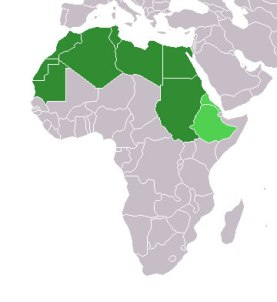
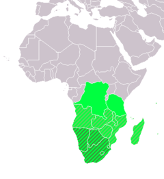
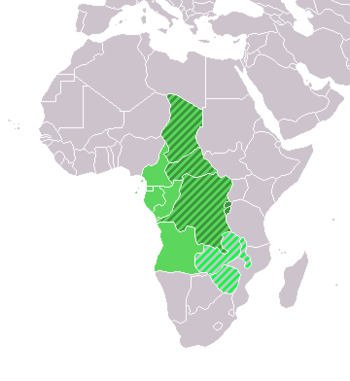
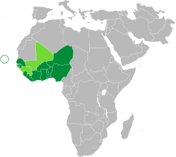
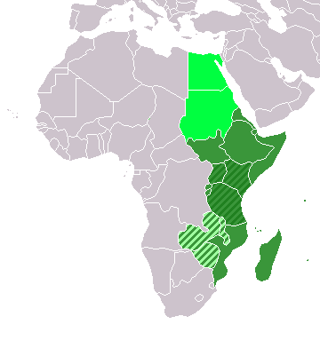

Regiões da áfrica
África Setentrional
A região da África Setentrional, conhecida também como Norte da África, localiza-se ao norte do continente, correspondendo às áreas de países como Líbia, Argélia, Egito, Sudão, Marrocos e Tunísia. Essa região encontra-se próxima ao Mar Mediterrâneo, e nas regiões de maior umidade concentram-se o maior número de habitantes. Juntos, os países dessa porção do continente fazem parte da Liga Árabe — organização regional entre países árabes fundada em 1945.
A população dessa região é superior a 160 milhões de habitantes, equivalendo a menos de 20% de toda a população africana. Os principais troncos étnicos são os israelitas, os camitas e os turcos. O clima predominante é o desértico, excetuando-se as zonas litorâneas e as proximidades de grandes rios. Em muitos aspectos, essa região é comparada ao Oriente Médio que, em algumas abordagens, inclui também o norte da África. Tais semelhanças ocorrem em virtude da proximidade entre os países árabes da Ásia e os africanos, separados apenas pelo Canal de Suez.
África Meridional
A região da África Meridional, também conhecida como África Austral, encontra-se na porção sul do continente africano. Abrange os territórios de países, como Zimbábue, África do Sul e Botsuana. Essa região é limitada pelo Oceano Índico na porção leste e pelo Oceano Atlântico na porção oeste. Sua economia destaca-se pelos minérios, como o ouro e o cobre, e também pela agricultura, com o cultivo de café, fumo e cana-de-açúcar.
África Central
A região da África Central encontra-se no centro do continente africano e corresponde às áreas dos países República Democrática do Congo, Chade, Gabão, República do Congo, Camarões e Angola, entre outros. A leste, essa região está limitada pela África Oriental, e a oeste, pelo Oceano Atlântico. É caracterizada por ter como limite o Oceano Atlântico, localizado a oeste e a leste, as regiões montanhosas. Além disso, é banhada por diversos rios, possuí temperaturas altas, a umidade do ar é elevada, o clima tropical é predominante da região e há presença das savanas.
África Ocidental
A região da África Ocidental encontra-se a oeste do continente africano e corresponde aos territórios dos países Nigéria, Níger, Mali, Senegal, Mauritânia, Gana, Cabo Verde, Guiné-Bissau, Guiné, Libéria, Serra Leoa, entre outros. Essa porção da África encontra-se entre o deserto do Saara e o Golfo da Guiné. Nas regiões próximas ao Saara, há menor concentração populacional devido às condições climáticas que não favorecem o seu desenvolvimento.
A África Ocidental caracteriza-se pela predominância de clima equatorial, vegetação representada pelas savanas e florestas. A população concentra-se especialmente nas regiões ao sul, pois no Saara as condições geográficas não são atrativos populacionais.
África Oriental
A região da África Oriental encontra-se na porção leste do continente africano e corresponde aos territórios dos países Etiópia, Quênia, Sudão do Sul, Tanzânia, Somália, Zimbábue, Uganda, Moçambique, Eritréia, Ilhas de Madagascar, entre outros. A África Oriental localiza-se especificamente entre a região da Bacia Hidrográfica do Congo e o Oceano Índico. Essa é uma das regiões de maiores problemas sociais.
é formada por onze países de grande diversidade política, econômica, linguística, dimensão geográfica e populacional, abrangendo uma vasta área geográfica que se estende do Oceano Índico até o Mar Vermelho.